| 日付 | 2017年1月2日（月） |
|---|---|
| メンバー | 家族（妻、長女・5歳、長男・3歳、父、姉一家） |
| アクセス | 車 |
奈良の有名な寺社はだいたい訪れた。
今年の初詣は未訪の室生寺に行ってみることにする。
さほど有名な寺ではないが、金堂、本堂、五重塔などが
国宝に指定されている、歴史ある寺院である。
駐車場に車を停めて、室生川に架かる太鼓橋を渡る。
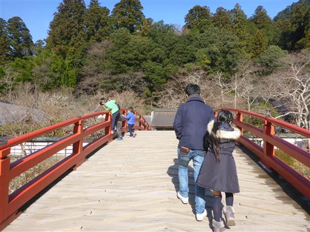
眼下に流れる室生川は冴えない川だ。

石に女人高野 室生寺と彫られている。
高野山は女人禁制だったが、ここは女性の参詣が可能で
女人高野と呼ばれていたようだ。
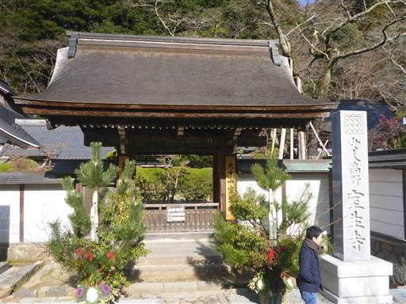
室生寺の境内の地図。
山岳寺院であり、奥の院まで行くためには、かなり階段を登る必要がありそうだ。
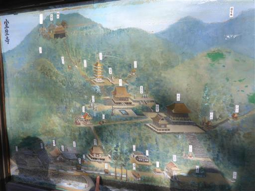
三宝杉。立派な三本の杉が並んでいる。
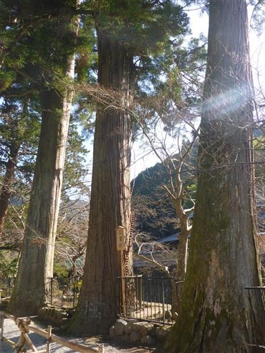
仁王門に到着。この門は近代に再建されたものだ。
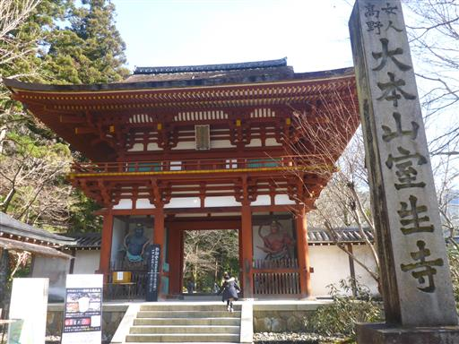
境内にはシャクナゲがたくさん見られる。
初詣のこの時期はあまり人がいないが、シャクナゲが咲く季節は大勢の参拝客で賑わう。
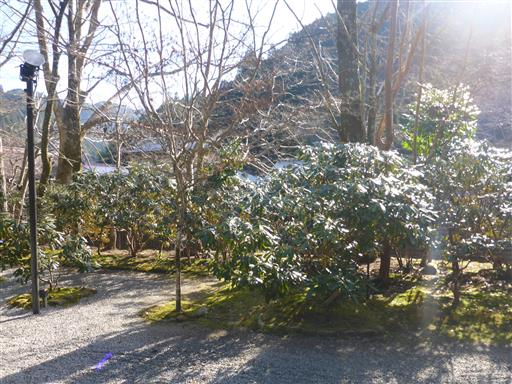
早速、階段が現れる。階段を登らないと、どこにもたどり着けない。
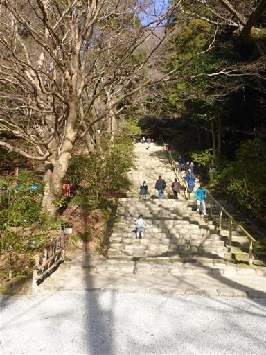
金堂に到着。中には見事な十一面観音が祀られている。
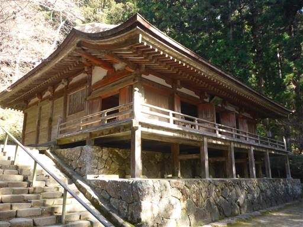
灯篭。頭は苔に覆われている。
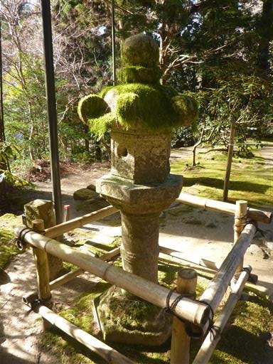
子供たちは走って階段を登っている。とっても元気だ。
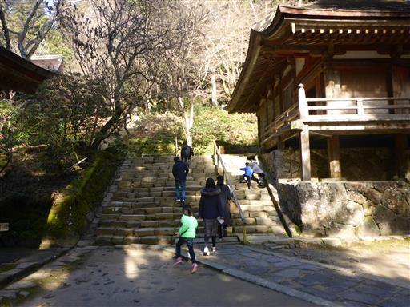
本堂に到着。1308年建立のかなり古い建物だ。
入母屋造の屋根は非常に美しい。
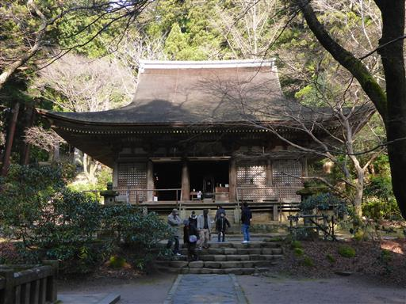
子供たちは建物よりも池に興味があるらしく、中を覗き込んでいる。
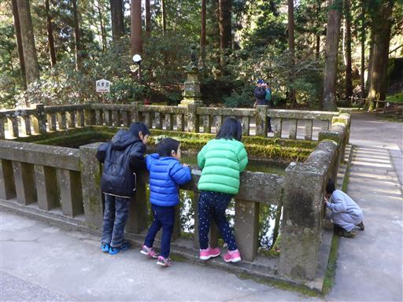
さらに階段を登って五重塔に到着する。小振りな五重塔で日本最小らしい。
しかし法隆寺の塔に次ぐ古い塔であり、国宝に指定されている。
1998年の台風で大きな被害を受けたが修復された。
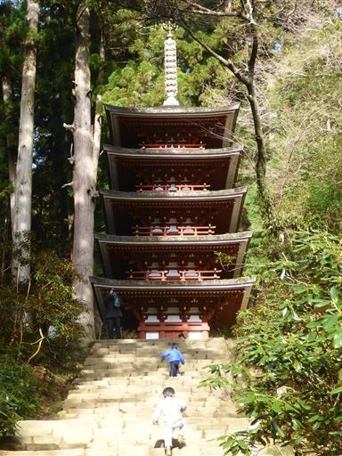
五重塔から立派な本堂を見下ろす。とても大きな屋根だ。

ここから奥の院まで続く長い階段が始まる。まだまだ元気な子供たちは走って登っている。
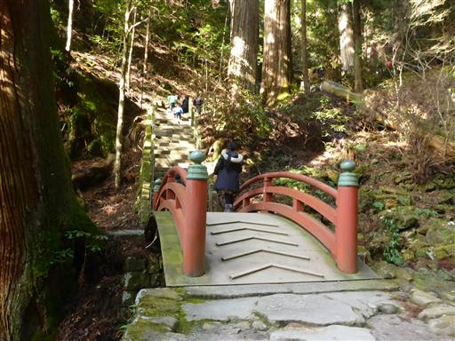
400段に及ぶ長い長い階段が続き、さすがに疲れてきたようだ。
それでもゴールの奥の院の建物が見えてきている。
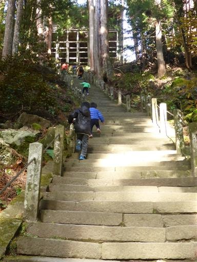
ようやく奥の院に到着。右の建物は御影堂で空海が祀られている。

階段の途中で座って休む人。体力大丈夫かー？
こういう場所になると子供のほうが体力がある。
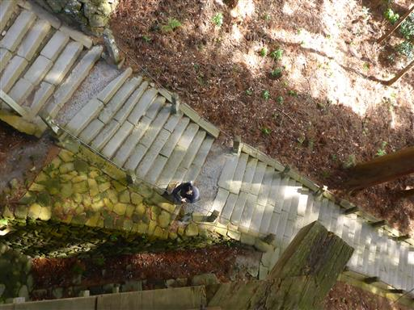
奥の院に立つ建物は土台が見事な木組みだ。
パンフレットには何も記載されていないため、さほど古い建物ではないのだろう。
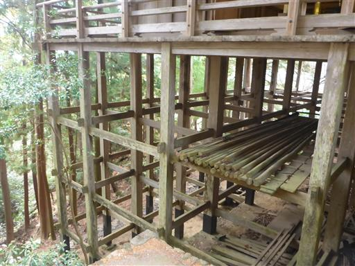
一通り見学を終えたら、今度は長い階段を下る。
子供たち4人は大して見学もせずに、先に下って行ってしまった。
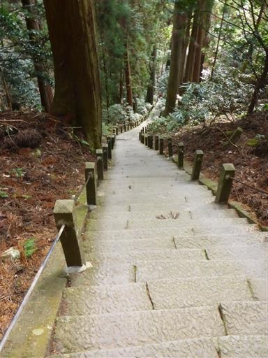
ようやく五重塔まで下りてくる。
五重塔は下から見上げるより、少し上から見たほうが美しい。
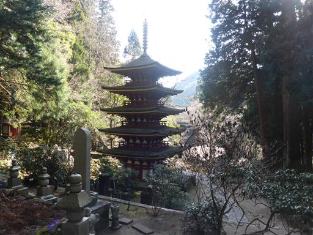
仁王門のところまで下りてくると、息子が行方不明になっている。
境内の外まで探しに行くと、土産物屋の前で店員さんに手をつながれて待っていた。
一人で先に駐車場まで行ってしまい、待っていたところを助けられたらしい。
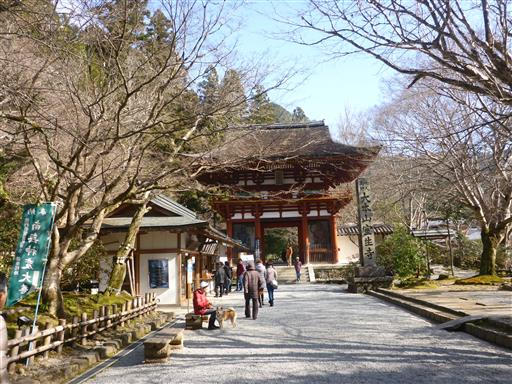
見学を終えたら、駐車場の側にある中村屋旅館で昼食をとる。
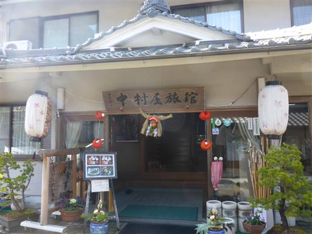
部屋には巨大な松ぼっくりなど、色々なものが飾られている。
料理はメニューが少なかったが、味はなかなか良かった。
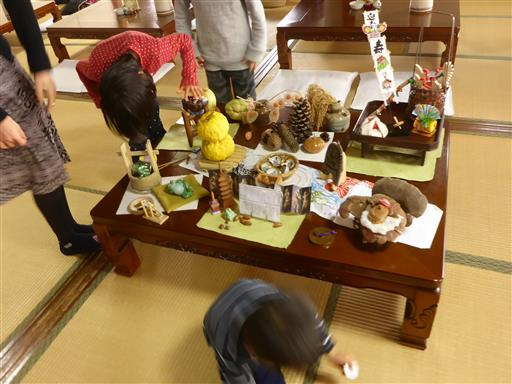
昼食をとったら、室生寺の近くにある室生不思木の森公園で遊んでから帰ることにする。
ここは少し古い公園だが、長いローラー滑り台がある。
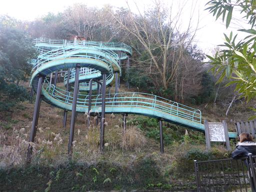
ローラーなのでよく滑る。ダンボールが置いてあり、使うとお尻が痛くならない。
しゃがんで滑るとスピードが出てなお良い。
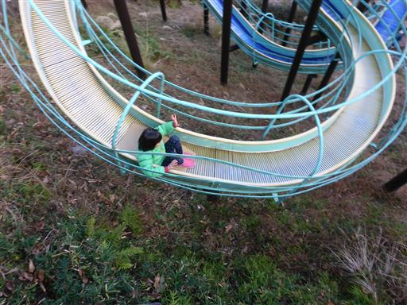
滑り台の上まで行くのもアスレチックみたいで面白い。
息子は明らかにネットの使い方を間違っている。
黄色い棒の上を歩くべきで、ネットは落下防止のためにあるはずなのだが…
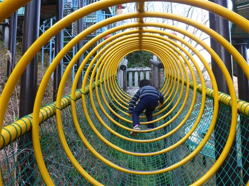
さらにネットをよじ登る。ここを通るのがかなり楽しいようだ。
普通の階段を登って容易に上まで行くルートもあるのだが、
必ずこちらの道を選択している。
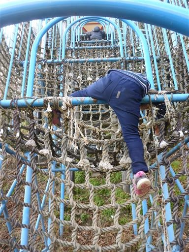
10回ぐらい滑ったら引き上げることにする。
今年も大人・子供とも楽しめる初詣になった。
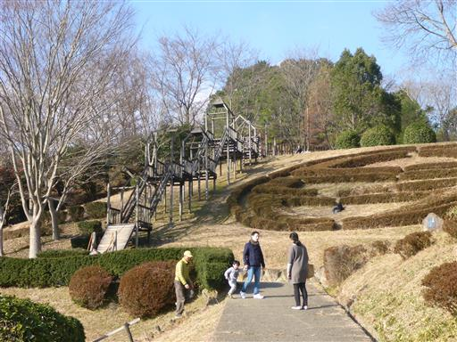